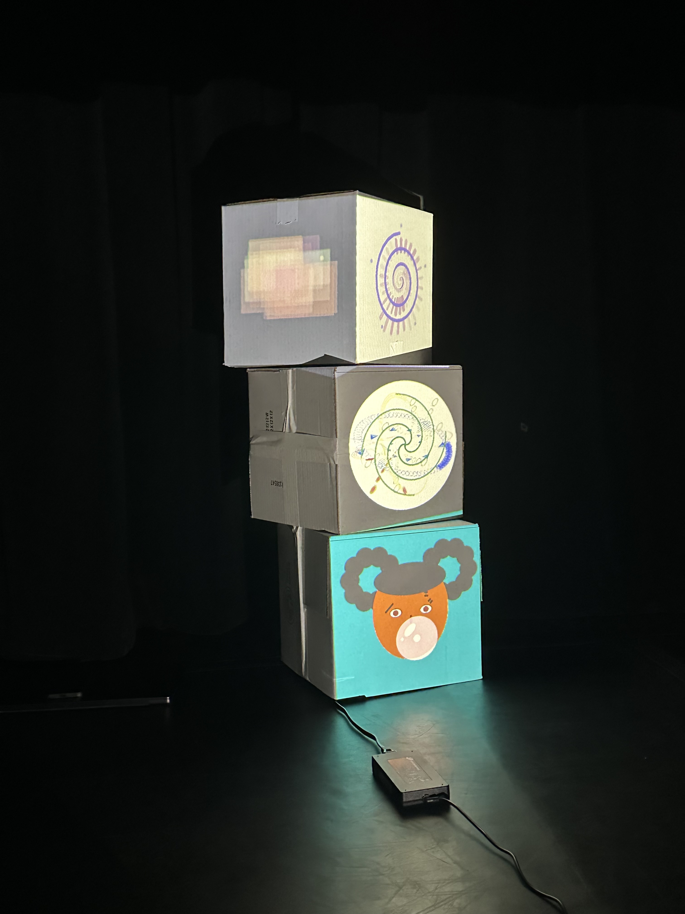
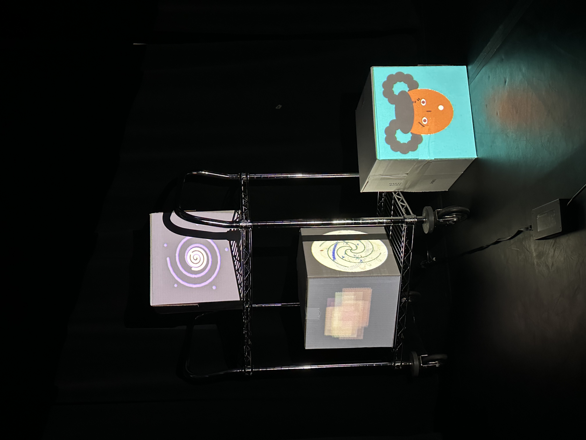
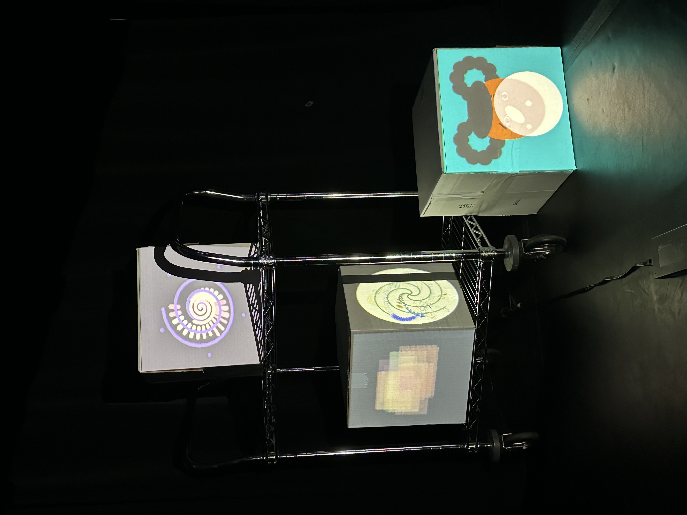
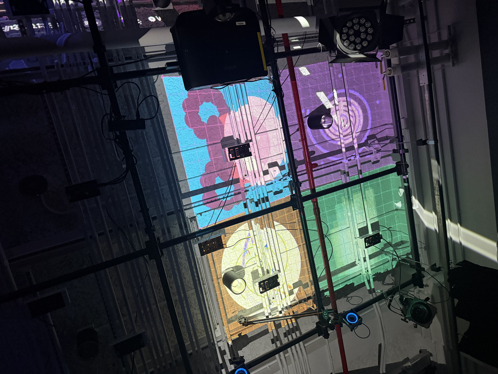
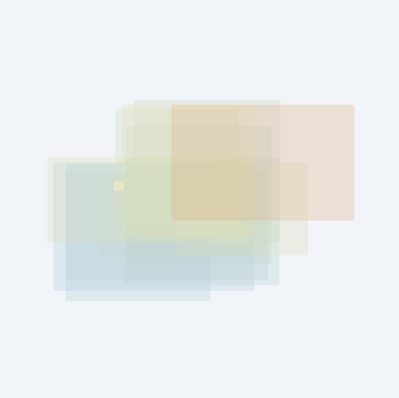

After a lot of trial and error, our group finally succeeded with projection mapping! Pressing the 'c' key opened up the calibration mode, and it was so much fun to share this exhibition experience together. We met in the 2nd-floor lab in a dark room, but with multiple projectors running simultaneously, the atmosphere was actually quite bright. When we first turned on our projector, the default brightness setting was way too high. I was wondering, "Why is it so washed out?" Especially because my animation has a dark navy background for the evening time, the screen was so bright that my "second sprinkle" effect was barely visible. But once we figured out why it was so bright and adjusted the projector settings—ta-da!—our animations finally appeared properly. It made me realize that when you're preparing for an exhibition, you really can't afford to overlook even the smallest details.
Collaboration-wise, there were four of us. Yuting connected her computer, but since Live Share forces everyone to follow the host's scrolling and only the host can use the "Go Live" feature, editing code together in real-time wasn't the easiest. So, we decided that everyone would work on their respective parts individually and integrate them beforehand so that everything would run smoothly when we gathered. Of course, we hit a few minor conflicts along the way when things didn't work out, but in the end, the most important thing was that we successfully mapped everything together! Since we couldn't all fix the fine details at once, I focused on setting up the physical environment—installing the projector, setting up the cubes, and so on.
Transitioning from my original "Clock" animation to the projection mapping version didn't require any major structural changes; I only had to make minor tweaks to the graphics (pg) and canvas size. I breathed a huge sigh of relief when it worked right away.
Seeing my animation projected onto the cube was quite unexpected because it looked very different from what I anticipated on my computer screen. On my monitor, the overlapping pastel rectangles looked soft and layered, and even without strokes, the boundaries were clear. But on the projection, the shapes got a bit smudged—they lost their distinct edges and looked a bit too "smoosh" and blended together. Thankfully, the "second sprinkles" I added at the very last minute played a super cute role, popping out nicely and truly giving that sprinkle effect! One big takeaway for me is how important background color is for projection: seeing my teammates' bright designs, I realized that lighter backgrounds look much more dimensional and eye-catching on a projector.
Since our group finished mapping on the cube first and had some extra time, we decided to experiment with different setups! We tried projecting onto the wall, bringing over a utility cart, and even stacking and projecting onto multiple cubes in various ways. Can’s clock design looked a bit like a compass, so we used it as a dynamic background while the rest of us placed cubes in front of it. We even looked up at the ceiling pipes and thought, “Ooh, what if we try projecting here?” We really tried out lots of creative ideas. Still, personally, I felt that mapping on our very first cube setup looked the cleanest and best. Haha




